This chapter describes all of the tasks necessary to define and build projects with Google Earth Enterprise Fusion. It includes information about vector, terrain, and imagery projects. For information about Google Maps projects, see the chapter titled Defining a Map Project.
The purpose of creating projects is to specify the resources you want to display, the order in which you want to display them, and, for vector projects, the display properties for each resource.
Google Earth Enterprise Fusion supports four types of projects:
Within each type of project, you can add multiple resources of the same type. Each resource within a project is identified as a layer.
You can assign related layers to a layer group, which allows Google Earth EC users to turn on and off the entire group at the same time. See the Working with Vector Layer Groups section of this chapter for more information.
For vector projects, the name of each layer appears in the Layer panel of Google Earth EC (outlined in red in the following graphic). You can use simple HTML codes in the layer names to display special designations.
The most effective way to create valuable vector data is to apply specific display rules to each layer. A display rule determines exactly which features of the layer are displayed and how Google Earth displays them. For more information on display rules for vector resources, refer to the Configuring Display Rules section of this chapter.
The first step in defining a vector project is to specify which resources to include and give the project a name.
 to open the Vector Project Editor.
to open the Vector Project Editor. Note: The selection in the Type drop-down list near the bottom of this dialog determines the type of resources that appear on the list. Vector Resource is automatically selected when you open this dialog from the Vector Project Editor, so only vector resources appear on the list.
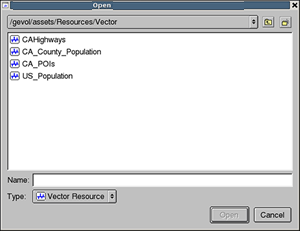
The selected resource appears in the Vector Project Editor.
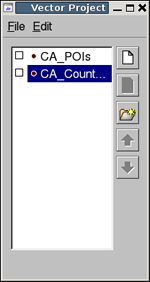
 to create a new folder in the desired location.
to create a new folder in the desired location. The new project name appears in the Asset Manager’s asset list.

Caution: Assets can not be deleted once they are saved. They can be cleaned, so that they are no longer available to use in Google Earth Enterprise Fusion; see Cleaning Asset Versions in the Building Assets chapter for more information.
The following sections describe the many ways that you can modify the layers in your project to customize it. When you finish modifying each project, you can build it individually, build several projects at the same time, or wait until you build your database to build all of its projects at the same time. See the chapter on Building Assets for complete details.
When you modify and then save a project, Google Earth Enterprise Fusion saves it in the same place with the same name as the original. If you modify a project that you have already built, you can rebuild it now or include it when you build the associated database.
After you create a vector project, you can add, remove, skip, or change the order of its layers.
Note: You must rebuild the project before the changes appear in the Preview pane.
When you add layers to your project, they appear in the order in which you added them. The order in which they appear in the Vector Project Editor determines the order in which they appear in the Layers panel of Google Earth EC. You can rearrange them in the Vector Project Editor, if you want them to appear in a different order in Google Earth EC.
Follow steps 3 through 5 in Creating a Vector Project for each layer you want to add to the project.
In the Vector Project Editor, right-click the layer you want to skip, and select Skip Layer. The selected layer appears with a strike-through.
Skipping a layer temporarily excludes it from the build. To include the skipped layer in a later build, right-click the layer and select Don’t Skip Layer.
In the Vector Project Editor, select the layer to remove and click
 .
.
Alternatively, right-click the layer and select Remove Layer from the context menu.
 or
or  to move the selected layer to the desired position on the list.
to move the selected layer to the desired position on the list.
(Or, right-click the layer and select Move Layer Up or Move Layer Down from the context menu.)
When creating vector projects, you can group layers together so they appear in a folder in the Layers panel in Google Earth EC. For example, you might have one vector layer that contains all the commuter rail lines for a given area and another vector layer that contains all the commuter rail station points for that area. You can place both layers in a folder named Transit - Rail Lines.
When you publish the database, a single folder named Transit - Rail Lines appears in the Layers panel in Google Earth EC. When a Google Earth EC user expands that folder, both the commuter rail line and the commuter rail station layers appear within it. In Google Earth EC, users can view the individual layers by turning them on or off individually.
If you would prefer a layer group to behave as a single layer, rather than as individual layers, deselect the Expandable checkbox in the Layer Group Properties dialog.
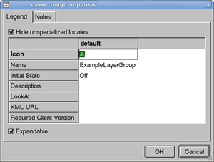
Right-click the layer to delete and select Take Layer Out of Group.
Alternatively, drag the layer to be deleted to the white space below the layer group folder. The layer appears below the list.
After you add vector-based layers to your project, you can customize the layers to determine how the layer list (or legend) appears in Google Earth EC. This applies to layer groups as well as to individual layers.
You can view the layer properties for a resource in a project by right-clicking the layer name in the Vector Project Editor and selecting Layer Properties from the context menu.
The Layer Properties dialog contains four tabs:
The following sections describe each tab.
The Legend tab displays the selected layer's properties.
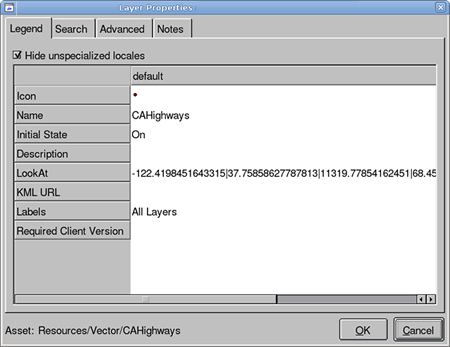When you first open this dialog for a new layer, only the default locale and its values appear, and the box next to Hide unspecialized locales is checked. Google Earth EC uses the default locale settings when you do not specify different settings here for a user’s locale (as specified in the user’s operating system). See the section on Locale-specific Values below for information on setting property values for individual locales.
The property values available for each locale are:
The icon that appears next to the name of the layer in the Layers panel of Google Earth EC. You can select a different icon for the layer by clicking the value in the Icon column and then selecting a new icon from the Icons dialog.
Note: You can use the Icon Manager to create more icons. See Managing Icons in the Setting Up Your Workspace chapter for more information.
The name of the layer displayed in the Layers panel of Google Earth EC. You can change the name of the layer by clicking the value in the Name column and changing it to a name that makes it easier for users to identify the layer.
Determines whether the layer is turned on or off by default in Google Earth EC. The first time a user connects to the database containing this layer:
Google Earth EC saves the state of the check box when a user disconnects from the database. For example, if you set the initial default state to Off, and then a user subsequently checks the box for a layer in Google Earth EC and then disconnects from the database, the next time that user connects to that database, the state of the check box for that layer is the same as when the user disconnected; that is, the box is checked.
Caution: If you select On as the default state for the layer, be aware of the performance impact on Google Earth EC. If a user selects too many layers simultaneously in Google Earth EC, it can seriously impact performance. So it is best not to turn on too many layers at the same time. In most situations, setting the default state to Off is the best choice.
Allows you to specify a camera view by selecting a KML/KMZ file that includes a LookAt element. If you specify a KML/KMZ file in this field, Google Earth EC users can fly directly to the specified camera view by double-clicking the layer.
When Google Earth EC users double-click the name of this layer, Google Earth EC flies to the camera view of the placemark defined in that file.
Allows you to specify a KML/KMZ file for this layer. (The KML/KMZ file must be hosted on a local or remote server.)
Caution: If you specify a KML/KMZ file in this field, the content of the KML/KMZ file replaces the resource for which it is defined. So if you intend to specify a KML URL, include the simplest possible “dummy” resource (very small source file) in the project instead of a resource you actually want to display in Google Earth EC.
Defines which labels apply to this layer. You can create labels using the Label Manager.
(Optional) Indicates specific versions of Google Earth that the layer will support. For example:
5.0.11733 indicates that the layer is included if the Google Earth client
version is 5.0.11733 or newer.5.0.11733-4.0.2291 indicates that the layer is included if the Google
Earth client version is between versions 4.0.2291 and 5.0.11733.-4.0.2291 excludes the layer if the Google Earth client version
is 4.0.2291 or earlier.If you uncheck the box next to Hide unspecialized locales, all of the locales that you created with the Locale Manager appear in the table.
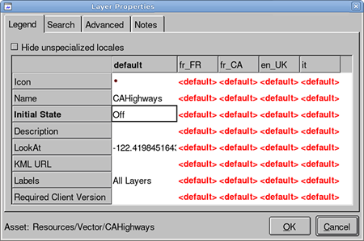
All of the values for non-default locales are set to the default values unless you change them. That means that regardless of which locale a user selects in Google Earth EC, the default values appear.
To change the value of a field for a specific locale, click the locale in the top row of the table. Click its field, and change the value. Some fields contain a drop-down menu, and some allow you to enter free-form text. For example, to support the Italian locale, enter values for the fields under it:
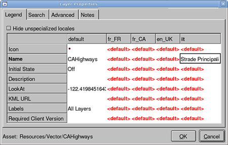
If Italy is the only locale for which you want to specify values other than the defaults, you can unclutter this dialog by checking the box next to Hide unspecialized locales. This hides the locales where no specialized values are defined and displays only the default and it columns.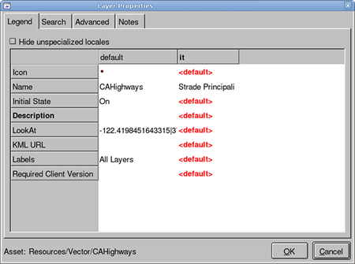
Continuing with this example, when a Google Earth EC user selects Italy as their locale, Google Earth EC displays the values listed under it.
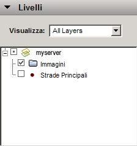
The Search tab allows you to specify one or more fields in the source data on which users can search. When you select one or more search fields on this tab of the Layer Properties dialog, a search tab appears in Google Earth EC that allows users to search for data in the selected field(s).
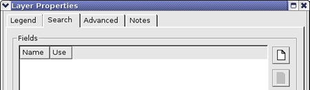
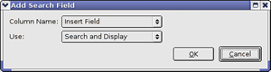
For example, if you have a database of trees that includes the common names of the trees and their ages, you could set up a search of all trees with a particular name and display their ages and locations. To do so, you would:
In Google Earth EC, users could then enter oak as the search term, and the results would be the names and locations of all oak trees in the database. If the user enters elm, the results would be the names and locations of all elm trees in the database.
Note: This is currently an exact search, which means that the Google Earth EC user must enter the value exactly as it appears in the database. In the example described above, if the user enters oak, the search results would include only trees listed as “oak”, not trees listed as “California live oak” or “cork oak”.
Your selections appear on the list of search fields on the Search tab in the order in which you added them:
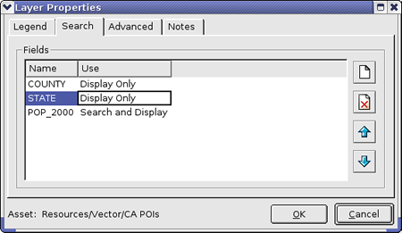
The order in which the fields appear on this list is the order in which they appear in the description balloon in Google Earth EC. (The fields designated as Search Only do not affect the order in which the fields to be displayed appear.) In this case, the description balloon for a POI might look like:
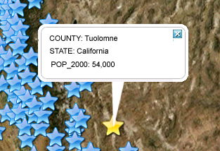
Click or
to move the fields up or
down in the list to change the order in which they appear in
Google Earth EC.
When you finish defining all of the layer properties, click OK. The Search Tab Properties fields appear at the bottom of the Vector Project Editor.
You can modify the Tab Label and Search Field Label values to names that suit your search.
Note: Google Earth Enterprise Fusion combines all of the fields you select for all of the layers in a project into one search tab with one search field label. If you want more flexibility or control over your search tabs, use the Search Framework API to create plug-ins, and then reference those plug-ins when you create search tabs with the Search tab Manager.
If you delete all of the search fields from the Layer Properties dialog, the Tab Label and Search Field Label fields disappear from the Vector Project Editor. If you ever add search fields to this project again, these fields reappear with the most recent values you provided.
The Advanced tab allows you to specify additional text-related options for the layer.
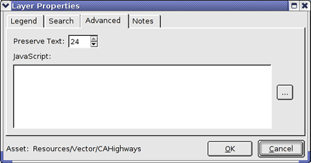
You can specify the level at which you want to preserve text labels on roads after the vector data for the road itself fades away. This feature is typically useful when a Google Earth EC user zooms in close enough to see the roads in the image, so it is no longer necessary to draw the road vector. However, it is still useful to see the name of the street.
To specify the correct value:
Begin export of level x. The value of
x is the last level at which vector lines are displayed.Note: This setting affects roads only.
The JavaScript Editor allows you to create JavaScript functions. Click the insertion button (...) to the right of the empty text field to display the JavaScript Editor.
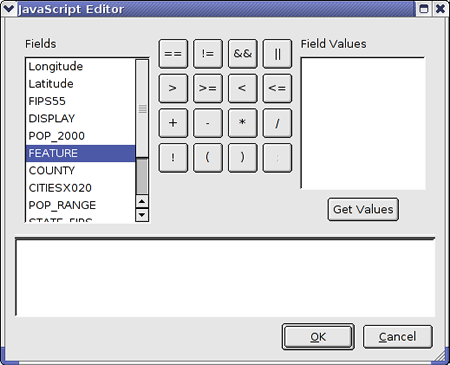
Note: You need to be somewhat familiar with JavaScript to use the JavaScript Editor. You can use all of the standard JavaScript functions or objects that you would use in a JavaScript-enabled web page with the exception of window, document, browser, and so on.
Select a field (or function, if you have created any) on the left, and click Get Values to display the values of that field for the selected data set in the Field Values list on the right.
Tip: If your data set is very large, it can take a long time to find all of the values. In that case, a progress dialog appears showing you an ongoing count of how many values it has found. You can click Cancel on that dialog at any time to stop scanning your source file for unique values and populate the Field Values list with the unique values found so far. Typically, it stops finding unique values part way through the file. So when the counter virtually stops, that is a good time to click Cancel without concern that you might be missing some unique values.
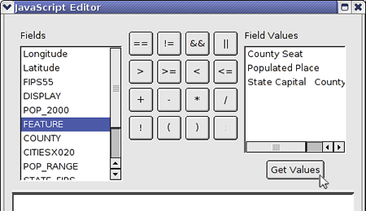
Use the buttons in this dialog to help you write your JavaScript functions.
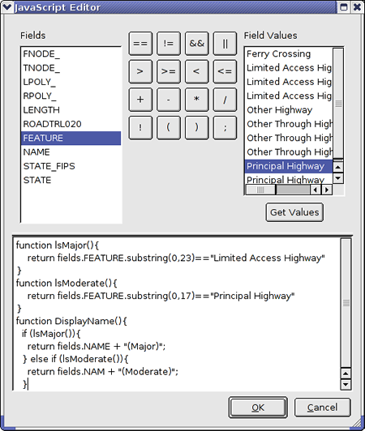
The functions you create here become available in the other JavaScript Editors, where you are defining label strings or filter expressions for the current layer.
When you finish creating your JavaScript functions, click OK. The functions appear in the JavaScript field on the Advanced tab of the Layer Properties dialog.
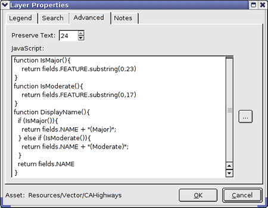
The Notes tab allows you to enter notes about the layer.
Enter the text of your note. To insert the current date and time, click Insert Timestamp.
Note: The notes appear in Google Earth Enterprise Fusion only.
To specify how you would like to display vector data, you configure display rules for each layer. For example, you might add a vector resource that includes the boundaries of lakes, but the line color is not different enough from the color of the lake, so the boundaries of the lakes are not visible at higher altitudes. Using display rules, you can change the color of the border and set the display level of the resource to a lower number, so the lake borders are visible at higher altitudes.
To define a display rule, right-click a layer in the Vector Project Editor, and select Configure Display Rules from the context menu.
The Display Rules dialog appears with the Feature tab selected.
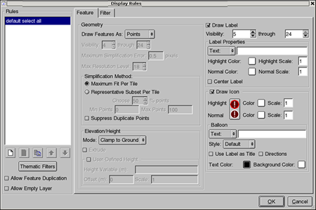The default rule, default select all, appears automatically in the Rules list and is selected. Below the list of rules are five small buttons. Their functions are:
| Create a new rule. | |
 |
Delete selected rule. |
| Make a copy of the selected rule. | |
 |
Move the selected rule up. |
 |
Move the selected rule down. |
When you click Thematic Filters, the Thematic Filtering Editor appears. This editor allows you to easily create a series of filters to show data with a particular theme. For example, to show the population of counties in California, you could create a series of filters that show counties with the highest population in a dark shade of green, the lowest population in a light shade of green, and mid-level population in a medium green. (See “Creating Thematic Filters” on page 5-23 for more details.)
When you check the box next to Allow Feature Duplication, Google Earth Enterprise Fusion allows data to be matched by more than one filter and, therefore, apply more than one rule to it. For example, if you want to apply one type of formatting to counties and another kind of formatting to zip code areas, you can check this box to apply both types of formatting to the same data.
When you check the box next to Allow Empty Layer, Google Earth Enterprise Fusion allows empty layers. This works well if you are using a dynamic data set you want to display.
The Feature tab displays the current settings for the selected rule. If you add rules, you can select any rule on the Rules list to display its settings on the Feature tab. See Adding a rule for more information.
The Filter tab lists any filters for the rule selected in the Rules list. See Filtering Vector Data in this chapter for more information about the Filter tab.
When you click the color button anywhere it appears (regardless of what color it is), the Select Color dialog appears.
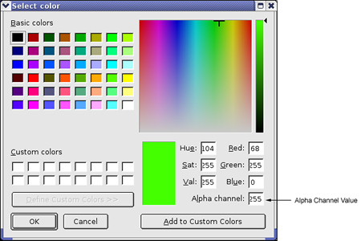
Click to select the desired color from the color grid on the left or the color spectrum on the right. To change the transparency of the lines, specify the desired Alpha channel value.
The Alpha channel value can range from 0 to 255, where 0 is transparent and 255 is solid. If you specify a slight transparency, underlying geographic imagery is not obscured by the feature when viewed in Google Earth EC. To determine the correct transparency setting, first select a mid-range number, such as 127, and view the results in Google Earth EC. Adjust from there as needed.
Thematic filters allow you to create a series of filters to show data with a particular theme. The following procedure guides you through creating thematic filters that show counties in California with the highest population in a dark shade of green, the lowest population in a light shade of green, and three mid-levels of population in a medium green.
Note: The Thematic Filter Editor replaces any rules you might have defined previously.
The Thematic Filtering Editor appears. The Thematic Filters Editor automates the creation of a series of filters.
Notice that under Color Ramp, Start Color is set to white, End Color is set to red, and Classes is set to 3. These are the default settings, which result in dividing the values of the selected attribute (or column) into three equal-size classes (or as close as possible) and assigning the colors white, pink, and red to those classes. In the table in the lower half of the dialog, the Color column lists three classes--white, pink, and red. Listed next to each color is its RGB value.
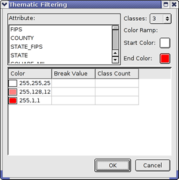
Google Earth Enterprise Fusion divides the number of data values for the selected field by 3 (the default number of classes) and fills in the Break Value and Class Count columns.
Note: You do not need to (nor should you) change the Break Value and Class Count values.
Google Earth Enterprise Fusion divides the number of data values for the selected field by the selected Classes value and recalculates the Break Value and Class Count fields.
The Color column lists the shades of color to be used and the RGB value of each color.

The thematic filters appear in the Rules list in the Display Rules dialog, replacing any rules you might have defined previously.
When you publish a database that contains the layer associated with these display rules, it looks something like this:
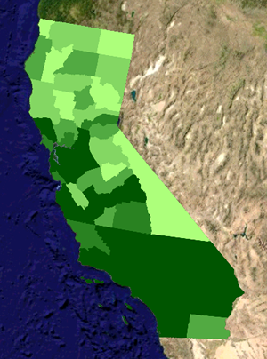The following procedures describe how to add, copy, reorder, and rename rules and allow feature duplication for multiple filters.
(copy) to its name.You can use this feature when you want to use the properties from an existing rule to build a new one.
or
to move the rule up or down in the list.
The rules are executed in sequence, so it is typical to list the most exclusive rules before the least exclusive.
Check the box next to Allow Feature Duplication below the list of rules.
The first option in the Display Rules dialog is Draw Features As, and you can select Points, Lines, or Polygons. The default setting reflects the type of data you are configuring. For example, if you are configuring point data, Points is the default selection. If you are configuring line data, Lines is the default selection.
The options that appear in this dialog are based on the option selected for Draw Features As. This section describes the display rule options for point features.
If you have a large number of point features in your data, you can simplify the data set by displaying a subset of points instead of the entire data set. Select the simplification method you prefer from these options:
Point primitives that have exactly the same coordinates and exactly the same label attributes qualify as duplicates. Check this box to automatically suppress duplicate point features.
The Elevation/Height option allows you to specify whether your data is displayed at ground level or is elevated. If it is elevated, you can specify either a relative position above ground level or an absolute elevation above sea level.
You can specify custom Elevation/Height values for geometry of any feature that uses points, lines, or polygons. The height value can either be a constant offset or derived from source attribute data. You can use this feature to create powerful theme maps, such as neighborhoods in a city raised in height based on crime statistics.
The Mode options are:
If you select Relative or Absolute, the following options become available:
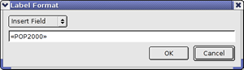
Then determine your input ranges from the data and calculate the values for Offset and Scale. For example, if:
Population = 20,000 - 150,000
Target Height = 10 - 200 meters
use the following linear transformations:
target height = 10 + ( (population - 20,000) / (150,000 - 20, 000) ) * (200 - 10)
offset = ( ( 20,000 * (200 - 10) / (150,000 - 20,000) ) + 10
scale = (200 - 10) / (150,000 - 20,000)
When you select the Draw Label checkbox, the label options become available.
The Draw Label section appears on the right side of the Display Rules dialog when you are defining display rules for points or polygons, or if you do not click Draw As Roads when you are defining lines.
The label options are:
The Visibility option allows you to specify the display level range at which your data is visible in Google Earth EC. The default values for the range are 5 and 24. To determine your visibility setting, preview the layer in the Preview pane.
Note: For geographically dense data, the data should only be visible when the user has sufficiently zoomed in to the area. Otherwise, the data clutters the view of the Earth from a high perspective. In addition, drawing dense vector data at a high level unnecessarily increases data processing time.
If you change the lower end of the range, Google recommends that you set it to no less than 4.
The Text/JS Text option allows you to specify the text that appears on the label. Select the option you prefer from the drop-down list, and then click the empty text field to open an editor.
Select a field (or function, if you have created any) on the left, and click Get Values to display the values of that field for the selected data set in the Field Values list on the right.
Tip: If your data set is very large, it can take a long time to find all of the values. In that case, a progress dialog appears showing you an ongoing count of how many values it has found. You can click Cancel on that dialog at any time to stop scanning your source file for unique values and populate the Field Values list with the unique values found so far. Typically, it stops finding unique values part way through the file. So when the counter virtually stops, that is a good time to click Cancel without concern that you might be missing some unique values.
You can use the buttons in this dialog to help you write your JavaScript expression.
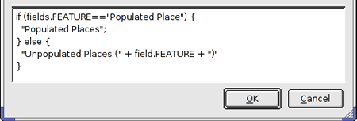
When you finish creating your JavaScript expression, click OK. The expression appears in the JavaScript field on the Display Rules dialog.
Note: Setting the scale to less than 1 could potentially yield invisible text labels, depending on the label size preference users set in Google Earth EC.
When you select the Draw Icon checkbox, the icon options become available.
You can select the icon you want to use when it is highlighted (selected) and normal (not selected) and the background color and scale of each.
Tip: You can include HTML to point to an image, if desired. To do so, use standard HTML code, such as <img src=”http://www.example.com/image.jsp?newImages=true&imageId=1191”>. If you do so, you must ensure that the image you reference actually appears in the location you specify.
The Insert Field drop-down list contains the names of all of the fields in your source data. Select a field name from the list, and click OK. For example, if you select NAME, the names of your features appear in Google Earth EC.
Alternatively, you can click Auto Populate to automatically insert the name of every field in the source data and its value.
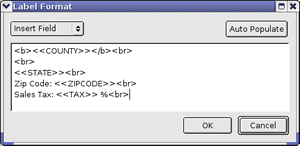
When you use the Auto Populate feature and a user clicks the icon for a point in Google Earth EC, all of the data associated with the point appears in the description balloon. For example, if the data set includes state, county, zip code, and sales tax percentage for each data point, the description balloon might look like this:
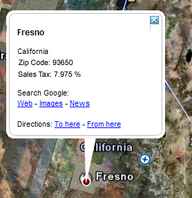
The first option in the Display Rules dialog is Draw Features As, and you can select Points, Lines, or Polygons. The default setting reflects the type of data you are configuring. For example, if you are configuring points data, Points is the default selection. If you are configuring line data, Lines is the default selection.
The options that appear in this dialog are based on the option selected for Draw Features As. This section describes the display rule options for Lines.
The Visibility option allows you to specify the display level range at which your data is visible in Google Earth EC. The default values for the range are 4 and 24. To determine your visibility setting, preview the layer in the Preview pane.
Note: For geographically dense data, the data should only be visible when the user has sufficiently zoomed in to the area. Otherwise, the data clutters the view of the Earth from a high perspective. In addition, drawing dense vector data at a high level unnecessarily increases data processing time.
Note: If you change the lower end of the range, Google recommends that you set it to no less than 4.
The value you specify is used in Google Earth Enterprise Fusion’s simplification algorithm to determine the maximum pixel error tolerated when displaying line vector data. The default is 0.5 pixels, which is appropriate in most cases.
Note: This functionality is intended for expert users.
Caps the level at which vector packets are built for a particular display rule. For example, if you want to see roads to level 24, set the Visibility through level to 24 and Max Resolution Level to 18. This builds the roads at level 18, but those roads are visible down to level 24 (the maximum level displayed in the Google Earth Client). Max Resolution Level defaults to 18 because beyond level 18, the number of packets and subsequent build time and database size quickly become unwieldy. If you set the Max Resolution Level beyond 18, monitor the vector fuse build to determine how many packets will be built and how long this will take. A warning message is displayed if you try to set both Max Resolution Level and the Visibility through level to greater than 18.
Select this option if your line data represents roads. When you do so, the Road Label option becomes active, and the right side of the dialog changes to road-related options. For Road Label Type, if you select Label, only the Road Label section on the right becomes available. If you select Shield, both the Road Label and Road Shield sections become available. See Road Labels and Shields below for details.
Do not select this box if your line data represents something other than roads (such as rivers or streams), do not check this box. See Drawing Labels for more information.
The draw style options allow you to specify the color, transparency, and width of the lines used to represent your line data.
Note: Setting the line width to less than 1 could potentially yield invisible text labels, depending on the label size preference users set in Google Earth EC.
The Elevation/Height option allows you to specify whether your data is displayed at ground level or is elevated. If it is elevated, you can specify either a relative position above ground level or an absolute elevation above sea level.
You can specify custom Elevation/Height values for geometry of any feature that uses points, lines, or polygons. The height value can either be a constant offset or derived from source attribute data. You can use this feature to create powerful theme maps, such as neighborhoods in a city raised in height based on crime statistics.
The Elevation/Height options are:
If you select Relative or Absolute, the following addition options become available:
When you select Draw As Roads on the left side of the Display Rules dialog and select Label for the Road Label Type, the Road Label section appears on the right. If you select Shield for the Road Label Type, both the Road Label and Road Shield sections appear on the right.
Road Label
These options allow you to define the text that appears on the road label.
The Insert Field drop-down list contains the names of all of the fields in your source data. Select a field name from the list, and click OK. For example, if you select NAME, the names of the roads appear in Google Earth EC.
Note: Setting the scale to less than 1 could potentially yield invisible text labels, depending on the label size preference users set in Google Earth EC.
These options allows you to define the shield that appears on the road. The options are:
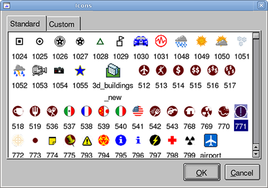
The Standard tab displays all of the standard icons that Google Earth Enterprise Fusion provides. The Custom tab displays any custom icons you have created and imported using the Icon Manager.
Select the icon of your choice, and click OK. The new icon appears next to Icon under Road Shield.
The first option in the Display Rules dialog is Draw Features As, and you can select Points, Lines, or Polygons. The default setting reflects the type of data you are configuring. For example, if you are configuring points data, Points is the default selection. If you are configuring line data, Lines is the default selection.
The options that appear in this dialog are based on the option selected for Draw Features As. This section describes the display rule options for Polygons.
The Visibility option allows you to specify the display level range at which your data is visible in Google Earth EC. The default values for the range are 4 and 24. To determine your visibility setting, preview the layer in the Preview pane.
Note: For geographically dense data, the data should only be visible when the user has sufficiently zoomed in to the area. Otherwise, the data clutters the view of the Earth from a high perspective. In addition, drawing dense vector data at a high level unnecessarily increases data processing time.
If you change the lower end of the range, Google recommends that you set it to no less than 4.
The value you specify is used in Google Earth Enterprise Fusion’s simplification algorithm to determine the maximum pixel error tolerated when displaying polygon data. The default is 0.5 pixels, which is appropriate in most cases.
Note: This functionality is intended for expert users.
Caps the level at which vector packets are built for a particular display rule. For example, if you want to see polygons to level 24, set the Visibility through level to 24 and Max Resolution Level to 18. This builds the polygons at level 18, but those polygons are visible down to level 24 (the maximum level displayed in the Google Earth Client). Max Resolution Level defaults to 18 because beyond level 18, the number of packets and subsequent build time and database size quickly become unwieldy. If you set the Max Resolution Level beyond 18, monitor the vector fuse build to determine how many packets will be built and how long this will take. A warning message is displayed if you try to set both Max Resolution Level and the Visibility through level to greater than 18.
You can use the Draw Style options to render filled 2D and 2.5D (extruded) polygon primitives.
You can render polygons in filled, outlined, or both modes. You can also render polyline data sets as filled polygons.
Note: Setting the outline width to less than 1 could potentially make it invisible.
The Elevation/Height option allows you to specify whether your data is displayed at ground level or is elevated. If it is elevated, you can specify either a relative position above ground level or an absolute elevation above sea level.
You can specify custom Elevation/Height values for geometry of any feature that uses points, lines, or polygons. The height value can either be a constant offset or derived from source attribute data. You can use this feature to create powerful theme maps, such as neighborhoods in a city raised in height based on crime statistics.
The Elevation/Height options are:
If you select Relative or Absolute, the following addition options become available:
When you select Draw Label, the label options become available. See Drawing Labels for details.
From the Display Rules window, click the Filter tab to access filter-related features.
A filter is a pattern expression that is applied to a specific field of a vector resource. When the pattern expression matches the specified field in the associated vector data, Google Earth Enterprise Fusion selects the matching records and applies the feature settings for the rule to those records. Filters are inclusive.
Note: Filters match string and numeric data only, not dates and other complex patterns.
To create an expression, select a field to match from your resource, select an operator, and enter a value to match. Alternatively, you can write a JavaScript expression (see To add an expression for details).
For example, if you have census data by county in California, you can use filters to graphically represent counties with:
The following graphics show these three filters:
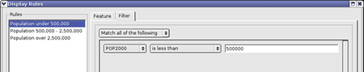
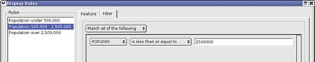
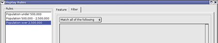
In Google Earth EC, these filters and display rules result in the colors you assigned for each rule distinguishing the counties with the population ranges you specified in the filters:
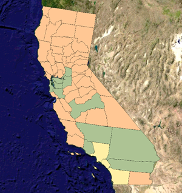
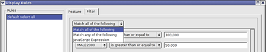
If you select:
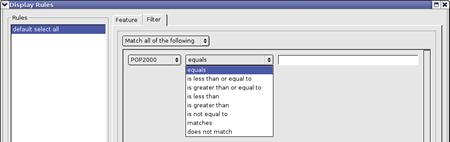
| Operator | Value in the text field: | Matches: |
|---|---|---|
| equals1 | 2000 | Only 2000 |
| is less than or equal to | 2000 | 2000 or any number less than 2000 |
| is greater than or equal to | 2000 | 2000 or any number greater than 2000 |
| is less than | 2000 | Any number less than 2000 |
| is greater than | 2000 | Any number greater than 2000 |
| is not equal to | 2000 | Any number other than 2000 |
| matches | [hc]?at | Only hat, cat, and at |
| does not match | [hc]?at | Anything other than hat, cat, and at |
If you select equals or is not equal to, you can use wildcard characters when matching against a string in the vector data. The supported wildcard characters are:
| Wildcard | Description | Example |
|---|---|---|
| * | Matches zero or more characters. | To display all states that end in the letter a:
*a |
| ? | Matches exactly one character (any character). | To display all states whose second letter is “o”:
?o* |
| [] | Matches the specific character(s) or range of characters listed in the brackets. | To display all states whose second letter is either “a,” “o,” or “n.”
?[aon]* To display all states that begin with letters “A” through “M.” [A-M]* |
Note: The full set of wildcard characters is not currently available in Google Earth Enterprise Fusion, so forward and back slashes are not treated as special. For character negation, select is not equal to expression from the expression operator drop-down list.
If you select matches or does not match, you must enter a regular expression pattern in the text field instead of a text value. Regular expressions are much more powerful than wildcard characters. Google Earth Enterprise Fusion does not support full Perl regular expression functionality, but it does support most standard regular expressions.
For example:
^M -- Matches all values that begin with “M”
a$ -- Matches all values that end with “a”
(North|South) -- Matches all values that have “North” or “South” anywhere in the text
If you have only a single rule defined for your vector data and you want to display all of the data available, simply leave the filter undefined.
If you have one or more filter-rule combinations defined but want to display all of the data available, you can add a final rule with no filter definition to match all elements not matched by previous rules. This results in the application of the final rule to all elements not matched by previous rules.
Keep in mind the following conventions when using multiple rules and filters for your vector data.
A rule is the collection of settings on the Feature and Filter tabs, but you must provide a distinct filter for each rule in the list in order to have distinct features or labels for different data.
For example, you might specify the following rule-filter combinations:
Filter 1: All parcels with IDs over 30.
Rule 1: Display boundaries in red.
Filter 2: All parcels with IDs between 30 and 40.
Rule 2: Display boundaries in blue.
In this case, all boundaries shown are red, because filter 1 includes all of the data that would be covered by filter 2. Rule 2 never gets applied.
To achieve the desired effect, you must reverse the order of these filter-rule combinations:
Filter 1: All parcels with IDs between 30 and 40.
Rule 1: Display boundaries in blue.
Filter 2: All parcels with IDs over 30.
Rule 2: Display boundaries in red.
Then rule 1 is applied to the parcels with IDs between 30 and 40, so those boundaries are blue, and rule 2 is applied to parcels with IDs over 40, so those boundaries are red.
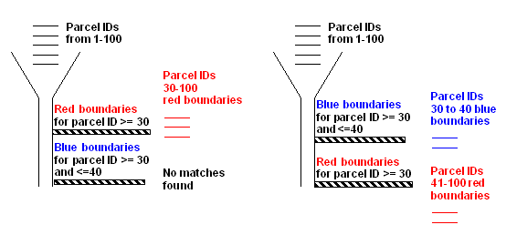When you are matching line data that is adjoining, such as boundary data, the last items matched are displayed on top. Consequently, if two parcels share a boundary and the last display rule sets boundary color to red, the boundary between the two parcels is red.
Using the example above, if parcel 40 is surrounded by parcels with IDs greater than 40, the boundaries around parcel 40 are red, not blue, even though the filter accurately applies blue boundaries to parcel 40. This is because all the parcels surrounding 40 are configured with the last filter, which, in effect, “covers” their boundaries with the surrounding red boundaries.
You can use square brackets to provide both upper and lower case characters to allow for case-insensitive matching. For example, if you want to match both ID and id, you can enter [Ii][Dd] to be sure both versions are considered a match.
You can export a set of display rules as a template, and then later import the template to apply the same display rules to other vector layers. The template contains all of the filters and formatting information that you specified for the associated layer.
When you export display rules, Google Earth Enterprise Fusion saves the information in a file with a name and in a location of your choice. You can save it on your local workstation, or you can save it in a shared folder on a network drive, so that other users in your organization can access it.
You can use the template file:
The following sections describe how to export and import display rule templates.
When you finish configuring the filters and display rules for a vector layer, you can export the settings as a template file. You can also use the template at the command line when adding to a vector project in batch mode. See Project Commands in the Command Line Reference chapter for details about using display templates from the command line.
to create a new folder in the desired location.
.khdsp extension.After you export display rules as a template file, you can import the template and apply those display rules to other vector layers.
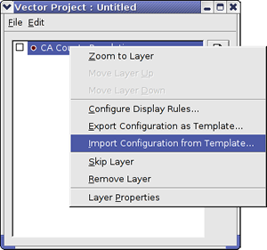
After you apply the template, be sure to confirm that the results are as you intended. If you apply a template to data that does not contain the exact same attributes as the original data for which that template was created, you might need to modify the display rules for the current data. To view the settings or make modifications to them, perform the steps described in the section titled Configuring Display Rules.
Within each type of project, you can add multiple resources of the same type. However, unlike vector projects, the entire imagery project appears as a single layer in Google Earth EC, regardless of how many source files it includes. See Display Order of Imagery and Terrain Resources for details.
The first step in defining an imagery or terrain project is to specify which resources to include and give the project a name.
The following instructions describe how to create an imagery project, but the steps are the same for a terrain project as well.
 . The Imagery Project editor appears.
. The Imagery Project editor appears.
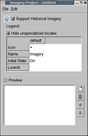
Google Earth EC saves the state of the check box when a user disconnects from the database. For example, if you set the initial state to Off, and then a user subsequently checks the box for an imagery project in Google Earth EC and then disconnects from the database, the next time that user connects to that database, the state of the check box for that imagery is the same as when the user disconnected; that is, the box is checked.
Note: The selection in the Type drop-down list near the bottom of this dialog determines the type of resources that appear on the list. Imagery Resource is automatically selected when you open this dialog from the Imagery Project Editor, so only imagery resources appear on the list.
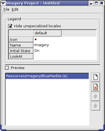
to create a new folder in the desired location. Caution: Assets can not be deleted once they are saved. They can be cleaned, so that they are no longer available to use in Google Earth Enterprise Fusion; see Cleaning Asset Versions in the Building Assets chapter for more information.
There are some additional actions you can take with resources after you add them to an imagery and terrain project, including:
To lower the resolution of a resource, right-click it and select Adjust Max Level Override. Then drag the slider to the left to adjust the resolution down. Click outside the slider to apply the new setting to the resource. The override appears in parentheses after the name of the resource in the Project Editor.
Note: The number of imagery resources that you can include within a single project is currently over 3000. If you add more that 3000 resources, you could experience a performance degradation when you build the project.
Tip: Every imagery and terrain project should include at least one resource that spans the entire Earth, such as BlueMarble or gtopo30. Everywhere you have a high-resolution inset, you should include a medium-resolution inset between it and BlueMarble.
As with vector projects, you can build imagery and terrain projects individually, build several projects at the same time, or wait until you build your database to build all of its projects at the same time. See the Building Assets chapter for complete details.
Although you can change the display order of imagery and terrain resources within a project, the order is ultimately determined by the resolution of the source files. That is, lower-resolution insets are automatically ordered below higher-resolution insets. So in reality, you can change the order of resources with the same resolution only.
In addition, the resolution of the imagery inset determines its optimal display level.
The following example shows several imagery resources in a project ordered by resolution. The resolution of each resource appears in parentheses after the resource name.
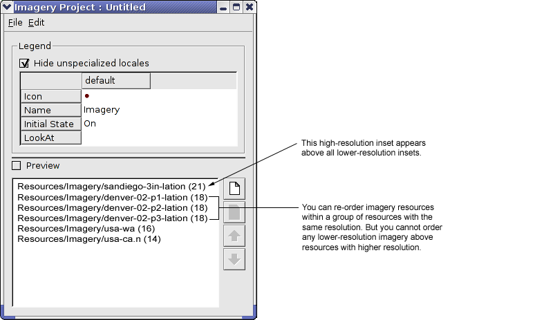The order in which the imagery or terrain resource data appears in the Imagery and Terrain Project Editors is the same as the stacking order of the insets in Google Earth EC. That is, higher-resolution insets appear above lower-resolution insets, so that viewing preference is given to the higher-quality imagery. The stacking order of same-resolution insets follows the order you define in the project. The following graphic illustrates this concept.

Creating a historic imagery project is very similar to a standard imagery projects and differs in two key aspects:
YYYY, YYYY-MM, or YYYY-MM-DD).Note: Imagery will be ordered by resolution first, and then by acquisition date. If three 1-meter resolution images for 2009, 2006, and 1999 are added to the imagery project, they will appear in order in Google Earth EC; however, if the 1999 image is 0.3-meter resolution it will be layered above the lower resolution (1-meter) 2009 and 2006 images and will always be visible despite having the time slider set to 2009 or 2006.
After you create a project, you can modify it in any of the following ways:
Note: When you save a modified project, Google Earth Enterprise Fusion replaces the old project definition with the new one. When you build that new project, Google Earth Enterprise Fusion creates a new version. When you select a project to include in a database, it is always the latest version of the project. However, your modifications to a project have no effect on earlier versions of that project that were previously built into a database.
Google Earth Enterprise Fusion saves the project in the same place with the same name. If you have already built the project, you can rebuild it now or when you build the associated database.